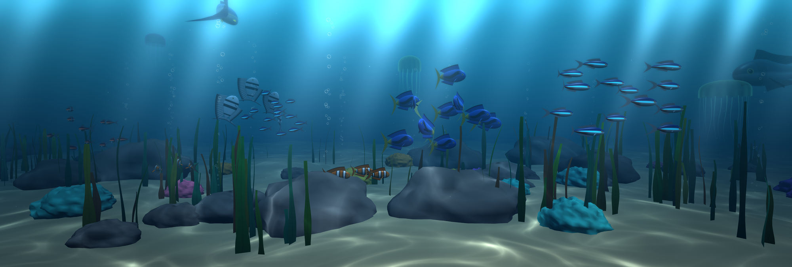
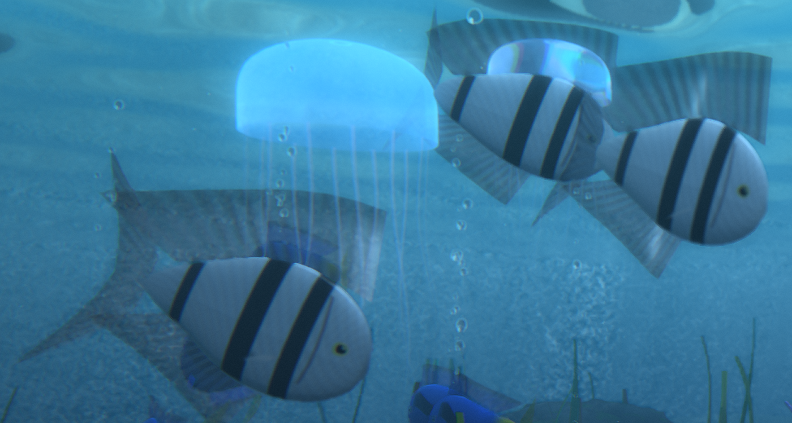
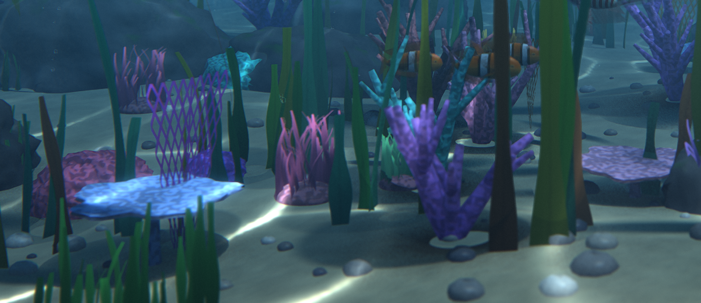
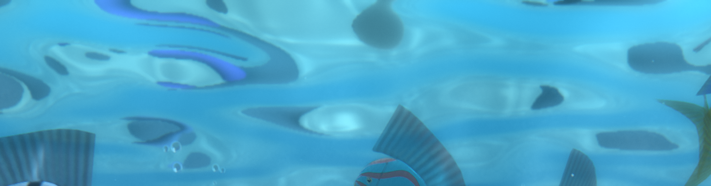
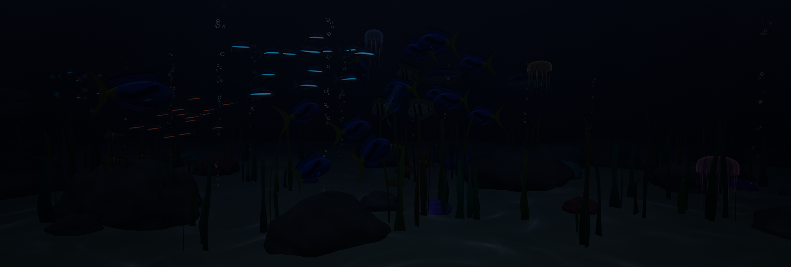

A living 3D aquarium
for your desktop
Procedural fish swim in schools across all your monitors, under rippling light, drifting bubbles and ray-traced shadows. Everything is generated by code: no video, no loops.

Three monitors, one continuous underwater world.
What you get
Built from scratch with Python and OpenGL.
One world across all monitors
Fish swim from one screen to the next. Mixed sizes and orientations work.
Eight species of procedural fish
Neon tetras, clownfish, tangs, angelfish, discus, lionfish, tuna and a shark. They school, and they flee the shark.
Ray-traced lighting
Soft shadows, ambient occlusion, caustics from a moving surface, light shafts and a mirror-like water surface seen from below.
A detailed reef
Branching and table corals, sea fans, anemones, kelp forests, pebbles, jellyfish, bubbles and marine snow.
Day, dusk and night
The light follows your clock. At night the neon tetras glow.
Fast and tunable
Paced to your monitors' refresh rate, optional AMD FSR upscaling, and a settings window with quality, fish count, lighting and more.
Gallery
Real captures from a three-monitor setup.




Download and install
It takes about a minute. No installer, no account.
- Download
Aquarium.scrClick the button above, or grab it from the latest release page (the file is under Assets).
- Right-click the file and choose Install
Windows opens the Screen Saver Settings window with it already selected. If Windows asks for administrator permission, accept: it copies the file where screensavers live.
- Click Apply and OK
Set how many minutes of inactivity you want in Wait. Use Preview to try it right away; any key or mouse movement exits.
- Optional: click Settings… to tune it
Water colour, quality, number of fish, lighting (auto follows your clock), depth of field, ray tracing and AMD FSR upscaling. The defaults already look good and run smoothly.
Can't find the Screen Saver Settings window?
Press the Windows key and type screen saver, then open Change screen saver. On Windows 11 it is also under Settings → Personalization → Lock screen → Screen saver. Pick Aquarium Screensaver from the drop-down list.
Install by hand (copy the file)
Copy Aquarium.scr to C:\Windows\System32 (administrator permission needed). It then appears in the screen saver drop-down list.
Run it from source instead
git clone https://github.com/madkoding/aquarium-screensaver.git
cd aquarium-screensaver
python -m pip install -r requirements.txt
python aquarium_saver.py /sNeeds Python 3.10+ on Windows. To build your own Aquarium.scr run .\build.ps1 (see the README).
Uninstall
Open the screen saver window again and choose another screen saver (or None). To remove the file, delete Aquarium.scr from the folder you copied it to (usually C:\Windows\System32). Your settings are in %APPDATA%\AquariumScreensaver; delete that folder to reset them.
Requirements
| System | Windows 10 or 11 |
|---|---|
| Graphics | A GPU with OpenGL 3.3 or newer (any recent NVIDIA, AMD or Intel GPU). A mid-range card is recommended for multiple monitors. |
| If it runs slowly | In Settings… raise Upscaling to balanced or performance, or lower Quality. |